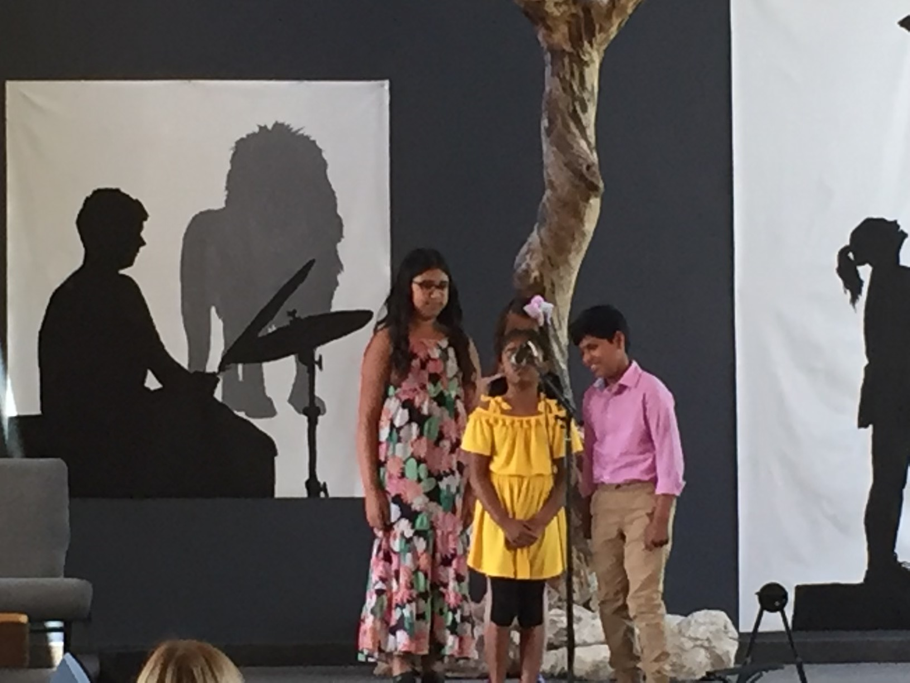
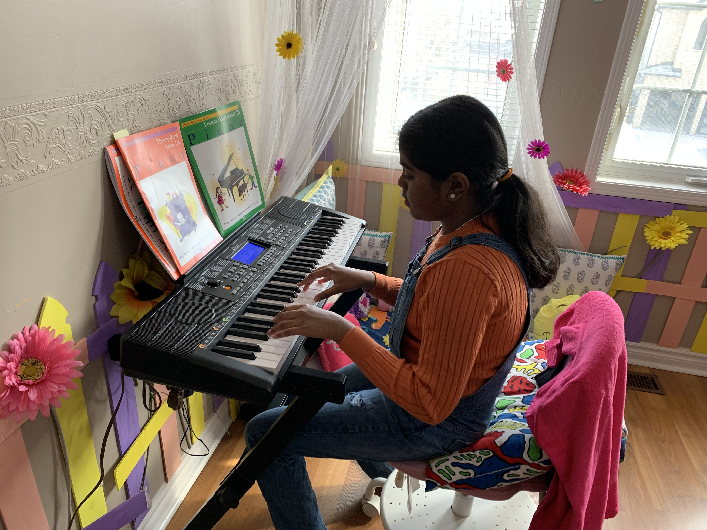
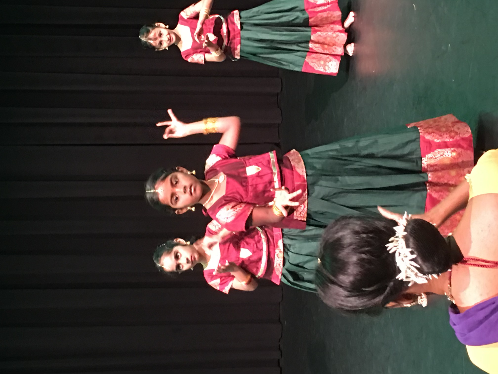
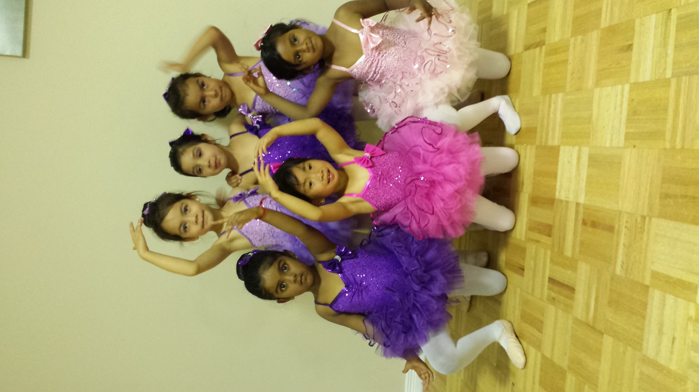
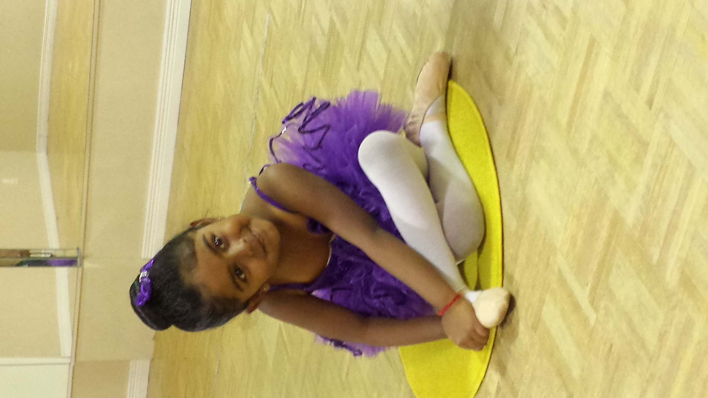
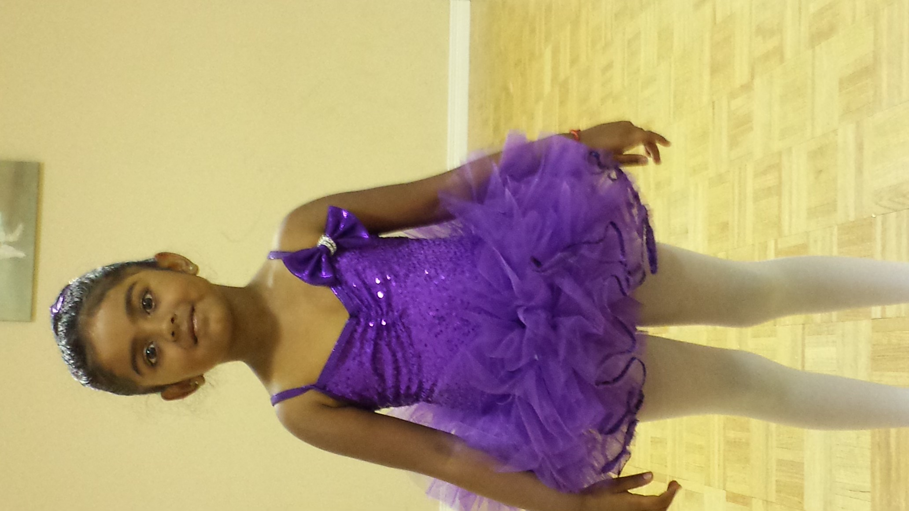
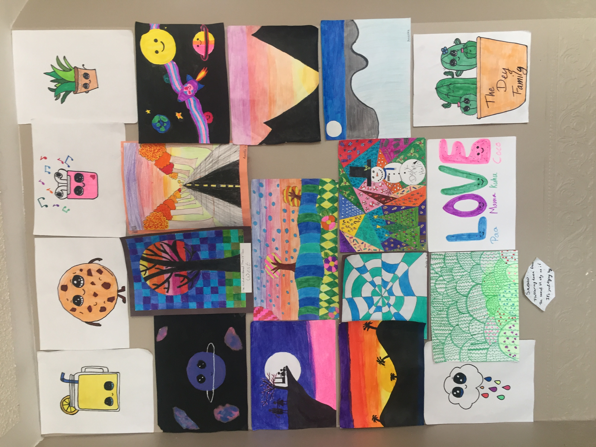

I love to draw, sketch, paint, read, code, sing and do math.
Arts and Technology play a big role in my life, it helps me express myself and it is very enjoyable.
Let me share some of it with you.
Music


Singing is one of my favourite hobbies because it is very fun to do and it's a beautiful art.
Singing is very important to me because there are so many types of music that I can listen to when I’m feeling happy, sad or angry.
I also just started playing piano last year which helps me accompany my singing.
Dance
I used to dance a lot, I did ballet and the Indian classical dance called bharatnatyam.
Ballet and bharatnatyam are a very elegant form of dance which is one thing I love about these dances. Bharatnatyam is also a cultural dance for me so that is another reason why I really like it. Although I do not dance anymore I still really like watching dance and occasionally dancing myself.




Art

I honestly love art so much, it's such a pleasure to sit down and draw and colour.
Painting is awesome as well. I started painting because my Mom paints a lot and I used to sit with her and watch her paint. It's so amazing how she moves the paint so elegantly on the canvas so I wanted to try as well.
Technology
Technology plays a very big role in my life, so many things are online now. I am very good at designing things online using Canva, Paint, 3D Paint, Google Drawings and Ibis Paint. I love coding as well and I have coded many things using text-based coding on codepen.io, Brackets and Visual Studio code. I also do block-based coding on code.org and thunkable. Coding is very exciting for me because I can code anything I want. It helps me create beautiful pieces of art.